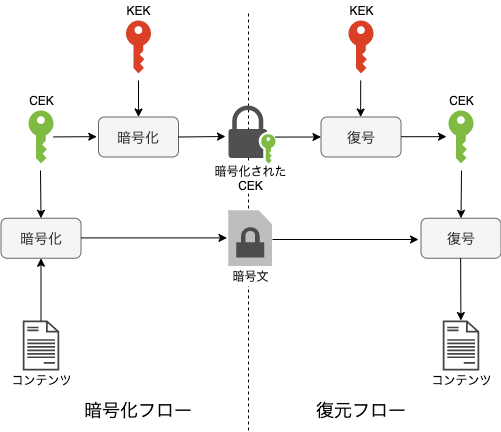

2. セキュリティ¶
2.1. IAM¶
AWSサービスの認証認可についてはほぼIAMが管理している
2.1.1. 基本的な用語¶
ルートユーザー
アカウント作成時に作られるすべての権限を持つユーザーで基本的には利用しないIAMユーザー
IAMで作成するユーザーで個人や役割に応じた権限を付与したユーザーを作成するロール
特定の個人ではなく役割に相当する概念で、役割を持つ人にまとめて付与できるプリンシパル
AWSリソースに対して、アクションをリクエストする人ポリシー
アクセス許可の具体的な定義
2.1.2. IAMポリシー¶
ポリシーにはユーザーやグループに付与するアイデンティティベースとAWSのサービス側に付与するリソースベースが存在する。
アクセス可否は２つのポリシーの組み合わせで決まり、どちらかに明示的な拒否があると実行できない。
2.1.2.1. IAMポリシーで変数を利用¶
ポリシーの中で${aws:username}のように動的変数を利用することができる。
IAMグループを作成して動的変数を利用したポリシーを付与することで、所属するユーザーごとのルールを付与することができる。
※同じようなポリシーを何個も作らなくて済む。
例えば、接続先リソースに動的変数を組み込めば、各ユーザーだけがアクセスすることができるS3ディレクトリが設定できたりする。
2.1.3. IAM RoleとAssumeRole¶
IAM Roleは「API権限を委譲する」機能である。
これを実現する機能としてstsを利用したAssumeRole がある。 AssumeRoleとは、stsに信頼できるリクエスト元を定義しておいて、信頼できることを確認できれば、一時的にRoleを与えるというイメージ。
IAMポリシーを作成する際には、信頼できるプリンシパルを定義する信頼ポリシーとどのサービスにアクセスできるかのアクセスポリシーを定義する。
信頼ポリシーで設定されているプリンシパルがAssumeRoleAPIを実行することで一時的に認証情報が作成され、アクセスポリシーに定義されたサービスを利用できるようになる。
信頼ポリシーは誰を信頼するか(認証相手を定義)
アクセスポリシーは何をさせるか（認可)
2.1.3.1. リクエスト元を信頼する（アクセスポリシー）¶
アクセスポリシーで以下のような定義を記述しておく
以下を定義して、AssumeRoleしても良い、アカウント(principal)を明確化
principalで信頼するリクエスト元
Actionはsts:AssumeRole
{
"Version": "2012-10-17",
"Statement": [
{
"Sid": "",
"Effect": "Allow",
"Principal": {
"AWS": [ "123456789012" ] // ← AWSアカウントを信頼
"Service": [ "ec2.amazonaws.com" ] // ← EC2サービスを信頼
},
"Action": "sts:AssumeRole"
}
]
}
2.1.3.2. リソースに対してアクションを許可する(リソースポリシー)¶
リソースポリシーでは以下のような定義を記述しておく
以下を定義して、AssumeRoleされたアカウントに対してのリソースアクセスを制限する
Resource: アクセスを許可するリソース
Action: 実施して良い内容
{
"Version": "2008-10-17",
"Id": "__default_policy_ID",
"Statement": [
{
"Sid": "__owner_statement",
"Effect":"Allow",// ← 許可か拒否か
"Action":"SQS:*",// ← アクションの内容
"Resource": "arn:aws:sqs:ap-northeast-1:123456789012:MyQueue"// ← アクションを実行できるリソース
}
]
}
※arn:aws:iam::123456789012:rootはルートユーザーではなくて、全ユーザーを対象とすることを意味する。
2.1.3.3. クロスアカウント¶
AssumeRoleを利用することで異なるアカウントのリソースにアクセスする、クロスアカウント設定ができる。
例えばユーザーAがユーザーBのアカウントのS3にアクセスしたい場合は以下の手順を踏む
ユーザーBでロールBを作成
ロールBのアクセスポリシーでユーザーAのアカウントをPrincipalとして設定
ロールBでS3のアクセス許可を設定
ユーザーAでロールAを作成
ロールAでロールBへのAssumeRoleを設定
2.1.3.4. IAM Policy Simulator¶
設計したIAMポリシーについて、想定しているアクションが実行できるか簡単に調べることができる。
2.2. STS¶
一時的な認証許可をすることができる。
2.2.1. STSによる一時的な認証許可¶
AppからS3にアクセスするという挙動が一般的な作りだが、Appに返すのが性能要件になる場合は、S3に直接アクセスさせることを考える。
その場合、クライアントに一時的にS3へ直接アクセスすることができる署名付きのURLを発行する。 デフォルトは15分程度の期限がある。
2.3. KMS(Key-Management-Service)¶
データを暗号化するための鍵を管理するサービス
管理する鍵を利用した暗号化やエンベロープ暗号化のための鍵のやりとりをするエンドポイントを持っている。
2.3.1. 鍵の種類：CMKとCDK¶
KMSでは、CDK(Customer Data Key)とCMS(Customer Master Key)という２つの鍵が登場する
CDKはデータを暗号化するための鍵であり、CMKはCDKを暗号化するための鍵である。
KMSを利用する場合は最初にCMKを作成し、CMKに紐付ける形でCDKを生成する。 CMKとCDKを利用することでエンベロープ暗号化を行い、安全にデータの暗号化が可能となる。
以下のサイトがわかりやすい
2.3.1.1. KMSのキーの種類詳細¶
CMK
カスタマー管理CMK
カスタマーがAWSで作成or外部からインポートしたキーでCCSで利用する、AWSが管理するキーAWS管理CMK
KMSが作成する、AWSサービスを暗号化するSSEで利用するためのキーAWS所有CMK
AWSが所有する、ユーザーは意識しないキー CDK対象キー
テキストの暗号化を行う鍵A非対称キー
プレーンキーの暗号化と復号化を行う鍵B
2.3.2. 処理方式の種類¶
KMSでは、SSE(Server Side Encryption)とCSE(Client Side Encrryption)の2種類の方式がある。
SSEでは、KMSと統合されたAWSサービスのEBSやS3、RDSで利用され、AWSが自動で暗号化と復号化をサービス内でやってくれるので、ユーザーは暗号化をあまり意識しない。
CSEでは、アプリケーション側で暗号化を明示的に行う。
2.3.3. KMSのエンドポイント¶
Encrypt/Decrypt: 暗号化と複合化を行うエンドポイントでサイズ制限あり
GenerateDataKey: プレーンデータキーと暗号化されたデータキーを返す（エンベロープ暗号化で利用）
2.3.4. エンベロープ暗号化(ハイブリット暗号化)¶
KMSのAPI公開されている直接の暗号化はサイズ制限などがあるので、エンベロープ暗号化を利用する。 通信に流れるのは暗号化されたテキストと暗号化された鍵 暗号化された鍵はKMSにアクセスできないと複合化できないので、そこで安全性を担保しているっぽい。（両方盗まれても鍵を複合化できない）
エンドポイントにGenerateDataKey（CMK）を指定
プレーンデータキー（鍵A）と暗号化データキー（鍵Bで錠をかけた鍵A）が返却される
プレーンデータキー（鍵A）でテキストを暗号化。プレーンデータキー（鍵Aは捨てる
暗号化データキー（鍵Bで錠をかけた鍵A）と暗号化テキストを送付
受信者は暗号化データキー（鍵Bで錠をかけた鍵A）をエンドポイントに送付するとプレーンデータキー（鍵A）が返却される
暗号化テキストをプレーンデータキー（鍵A）で復号化する

2.3.5. 主なユースケース¶
SSE(Server Side Encryption)
SSE-S3
S3で管理する鍵で暗号化する（かなりシンプルで監査ログなどは対応していないSSE-KMS
KMSで管理する鍵で暗号化する。監査ログなどを吐くことができるSSE-C S3へのファイルアップロードで、クライアントで準備した鍵で暗号化する
CSE(Client Side Encryption)
CSE-KMS
KMSで管理しているキーを利用して、クライアントサイドで暗号化を実施するCSE-C
ユーザー側で用意したキーを利用して、クライアントサイドで暗号化を実施する
2.3.6. 大量の問い合わせ¶
大量に暗号化や複合化の問い合わせをするとスロット処理がエラーを発生させる可能性がある。
対応としては、AWSサポートに依頼して、AWS KMSレート制限を引き上げを依頼することや、時間を置いて問い合わせをする（エクスポーネンシャルバックオフ）といった対応が必要。
2.4. Cognito¶
Web-AppやMobile-Appに対してAPIベースで認証機能を提供するサービス
2.4.1. ユーザープール¶
ユーザーDBに相当するが、AWSがマネージドで管理してくれる。
2.4.1.1. ユースケース¶
ざっくり分けると３つのユースケースに分類可能。Appへの認証、IDプールと連携してAWSサービスへのアクセス、CognitoからLambdaのキック。
EC2やECS常に配置したWeb-AppやMobile-Appの認証：アプリケーションへの認証をする
API GWやALBからのオーソライザ：Tokenの認証をしてIDプールと連携して他のサービスと連携する
Lambdaを使ったオーソライザ：CognitoがLambdaを使って、サインインのワークフロをカスタマイズする
2.4.1.2. 具体的な利用方法¶
まず、ユーザーディレクトリを定義して、サインアップ方法やパスワードポリシーを設定する。
アプリクライアント側（認証を求めてくるクライアント）によって、推奨される認証フローが異なる点に注意
2.4.1.3. ユーザープールとアプリケーションの統合¶
Cognitoでは、OIDCの標準に準拠したエンドポイントが提供されている。 そのため、アプリへのリクエストに対して、Cognitoのエンドポイントにリダイレクトすることで認証・認可をCognitoに任せることができる。 Cognitoで認証してクライアント側にTokenを付与することで、Cognitoと連携するアプリへの一元的なアクセスができるようになる（シングルサインオン）
Cognitoへの認証を外部フェデレーテッドIDプロバイダと連携して任せることができる。 具体的なIDプロバイダとしてはGoogle ,Amazon ,Facebook ,Apple ,SAML, OpenIDConnectプロバイダが挙げられる。
2.4.1.4. ユーザプールの定義¶
認証フローを定義する必要があるが、モバイルで実行されるアプリケーションかサーバーサイドのWebアプリケーション化で設定内容が異なる。
ALLOW_ADMIN_USER_PASSWORD_AUTH
CLIやSDKを使って管理やユーザーとして認証処理する場合のオプション。 リクエストにパスワードパラメータが含まれるため、安全なサーバーサイドのWebアプリケーションで利用する。ALLOW_CUSTOM_AUTH
Lambdaでカスタム認証を行う場合に利用するALLOW_USER_PASSWORD_AUTH
CLIやSDKで認証を行うオプション。 リクエストにパラメータ情報をもつので、モバイルアプリで利用する場合は、SRPを利用するALLOW_USER_SRP_AUTH
Secret Saltなどでパスワード交換性の安全性を高めるALLOW_REFRESH_TOKEN_AUTH
リフレッシュトークンを使って認証を行う場合のオプションクライアントシークレットの生成
アプリクライアントの正当性を検証する認証情報で、不特定多数に参照される可能性があるモバイルアプリケーションでは利用しない
2.4.2. IDプール¶
ユーザープールや外部フェデレーションで認証したユーザーに対してAWSサービスを認可する機能を提供
cognitoでは認証をユーザープールが、認可をIDプールが行う。 したがって、両者が協力している。
流れとしては以下
ユーザープールで認証される
JWTがクライアントに提供される
クライアントがIDプールにTokenを渡す
IDプールがTokenの検証をする
Tokenが正しければ、STSに認証情報をもらう
クライアントが所望のサービスにアクセスする
付与する認可情報はユーザーに応じたルール設定などが可能であり、認証されていないユーザーに対しても権限付与のルール設定ができるので、ゲストユーザーに対する権限付与を行うことも可能
AWS CLIで動かして学ぶCognito IDプールを利用したAWSの一時クレデンシャルキー発行 この記事は実際に画面からIDプールの設定をしていてわかりやすい。
2.4.3. JWT¶
署名付きの認証情報を含むToken
署名がJWTの発行元の秘密鍵で暗号化されているため、公開鍵で復号化するだけで署名を検証することができる点が有用
ただし、期限付きの合鍵となるので奪取されることは避けなくてはいけないので取り扱いに注意が必要。
2.4.4. Cognito Sync¶
現在は、AppSyncを利用することが推奨されている点に注意
Cognitoのユーザープールで特定された個人に対して固有のデータストレージを提供する。 クラウドで情報を同期しているので、デバイスが変わってもユーザーが同じなら情報は共有される。
2.5. ACM(AWS Certificate Manager)¶
ACMはSSL/TLSサーバー証明書を管理するサービス
SSLを有効化するためには、通信を行うサーバーに対してSSL/TLSサーバー証明書を発行準備する必要がある。 SSLが有効化されていることでHTTPSの通信が可能となる。
2.5.1. 証明書の発行元¶
公的機関が発行するパブリック証明書と、自前の認証局で発行するプライベート証明書がある。
パブリック証明書は、接続の安全性を保証するために利用され、不特定多数の人がアクセスするWebサイトなどで利用する。
2.5.2. ACMの役割¶
証明書の発行：パブリック・プライベートの証明書を発行
証明書のインポート：既存の証明書をインポートする
証明書のデプロイ：AWSサービスに証明書を配備する
2.5.3. ACMが利用できないリージョン¶
ACMが利用できないリージョンで、証明書をインポートしたい場合には、ACMの代わりにIAMを利用する。
2.6. WAF¶
WAFはWebアプリケーションファイアウォール（Web Application Firewall)機能である。
ルールを設定して、特定のIPからのアクセスを拒否したりすることができる。

2.7. Shield¶
ShieldはL3,L4,L7レイヤーへのDDoS攻撃からシステムを保護する。 StandardとAdvancedが存在
Standard
L3-L4へのDDoSを保護することができ、デフォルト有効で無料Advanced
WASFと連携することでL7への攻撃への対応 攻撃の通知やレポーティング機能を提供。
ただし、Advancedは年間3000ドル＋通信量で費用が多くなるので注意
2.8. Guard Duty¶
Guard Dutyは見張り役という意味を持つ。
ユーザーの動作や通信をモニタリング・分析し、脅威を識別する脅威検出サービス。
以下のログを収集して、機械学習モデルなどを利用しながら、脅威を検出する。
VPCフローログ
CloudTrail
Rout53
DNS

2.9. Amazon Macie¶
S3バケットを対象として、オブジェクト内部の脅威の検出やクレジットカードが暗号化されていないなどを検知することができる。
検知には機械学習が利用されている。
2.10. Detective¶
各種AWSサービスから収集できるデータを分析・可視化することで、インシデンtおの原因を特定（犯人探しを）する。
2.11. Inspector¶
EC2のソフトウェアの脆弱性についてサポートするサービス。
サーバー内部から脆弱性を診断するホスト型診断と外部ネットワークから脆弱性を確認する外部ネットワーク型診断がある。

2.12. Secrets Manager¶
データベースのパスワードやAPIキーなどデータ流出の危険性がある認証情報を集約して管理するサービス。 KMSで暗号化して保存できるので、セキュアに管理することができる。
Secrets Managerにシークレットを管理し、Secrets Managerにアクセスすることで、シークレットを取得する。
Systems Managerのパラメータストアでも、認証情報を一元管理することができるが、シークレットの自動ローテション機能が存在する。 シークレットの更新期間を設定すると、パスワードを自動更新して、RDSなどのデータベース側のパスワードも変更することができる。